Idővonal
A fontosabb állomások, a legfrissebbel kezdve. A 2024-es bejegyzések a régi blogunkból származnak, ott a dátum a bejegyzés napja.
Előadások és események
- H-SPACE 2026 (9th International Conference on Research, Technology and Education of Space), BME, Budapest. Előadás: In-Orbit Investigation of Passive Thermal Control Coatings: The Seraph Experimental Payload on the HUNITY 3PQ Satellite. Előadók: Magó Máté és Horel Anna. A konferencia oldala · Az előadásunk felvétele
- Űrkorszak DIÁKszeminárium – versennyel és díjakkal (MANT–BME), BME. A „HUNITY: CanSat diákpanelek a világűrben” programrészben a Seraph mérőpanelt mutattuk be. Előadók: Magó Máté és Csaba Zsigmond. Az esemény oldala
- Öregdiák nap, Premontrei Szent Norbert Gimnázium. Előadás a projektjeinkről.
- 37. OTDK, Műszaki Tudományi Szekció, Debreceni Egyetem Műszaki Kar. A CanSat-projektből készült TDK-dolgozat előadása. A szekció oldala
- MATE Intézményi Tudományos Diákköri Konferencia. 2. helyezés az Anyag-, Ipari technológia és Mechatronika szekcióban. A MATE híre
- Diákönkormányzati nap, Premontrei Szent Norbert Gimnázium. Előadás a projektjeinkről.
- ESERO Hungary megnyitó. A CanSat-projekt bemutatása a PreSat csapattal közösen. ESERO Hungary
- CanSat Hungary döntő. Tudományos különdíj. Az Űrvilág beszámolója a döntőről
- Iskolai bemutató. Programot szerveztünk az iskolában 5.–12. évfolyamos diákoknak: a 3D nyomtatónk az aula közepén dolgozott, az érdeklődőknek előadást tartottunk a projektről.
2026
-
10 másodperces üzemmód
Ettől a hónaptól a Seraph 60 helyett 10 másodpercenként mér. Az adatok kiértékelése folyamatban van (Eredmények).
-
Előadás a H-SPACE konferencián
Magó Máté és Horel Anna Budapesten, a H-SPACE 2026 konferencián mutatta be a Seraph kísérletet: a panel tervezését, programozását, a földi teszteket és a kísérlet célját. A konferencia oldala · Az előadásunk felvétele

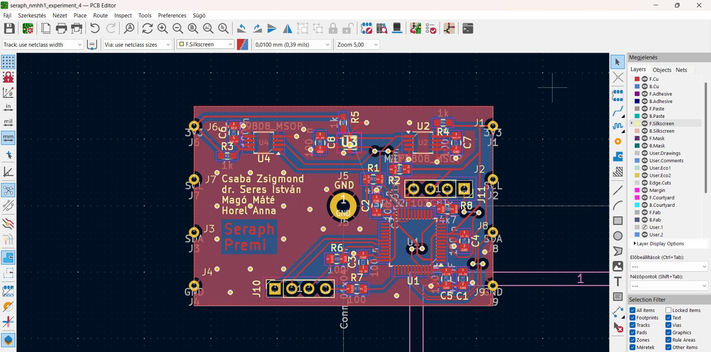
2025
-
A Seraph a MANT diákszemináriumán
A Magyar Asztronautikai Társaság és a BME Űrkorszak DIÁKszemináriumán, a HUNITY diákpaneljeiről szóló programrészben Magó Máté és Csaba Zsigmond mutatta be a Seraph mérőpanelt. Az esemény oldala
-
Az első kiértékelt mérések
A kiértékelésbe bevont mérések ettől a hónaptól kezdődnek.
-
Felbocsátották a HUNITY-t
A műhold napszinkron pályára állt, NORAD-azonosítója 66670. Részletek a HUNITY oldalon.
-
Öregdiák nap
Az iskolánk öregdiák napján előadást tartottunk a projektjeinkről.
-
Előadás az OTDK-n
A 37. OTDK Műszaki Tudományi Szekciójában, a Debreceni Egyetem Műszaki Karán adtuk elő a CanSat-projektből készült TDK-dolgozatot. A szekció oldala
2024
-
Hidegteszt −35,5 °C-ig
A panelt a MATE laborjában ipari fagyasztóban teszteltük, a legalacsonyabb hőmérséklet −35,5 °C volt. Köszönjük az egyetemnek a lehetőséget! A fényszenzorral azt is bebizonyítottuk, hogy a hűtőben tényleg lekapcsol a lámpa, amikor becsukjuk az ajtót.
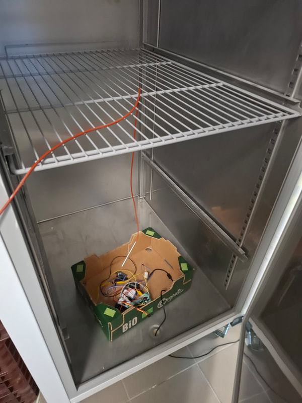
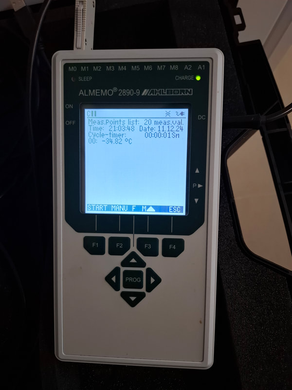
-
Bejelentettük a HUNITY-projektet
Hónapok óta dolgoztunk rajta, ekkor mutattuk meg: egy 45 × 30 × 3 mm-es saját tervezésű panel, amely azóta a HUNITY PocketQube műhold fedélzetén hőmérsékletet és fényt mér a világűrben.
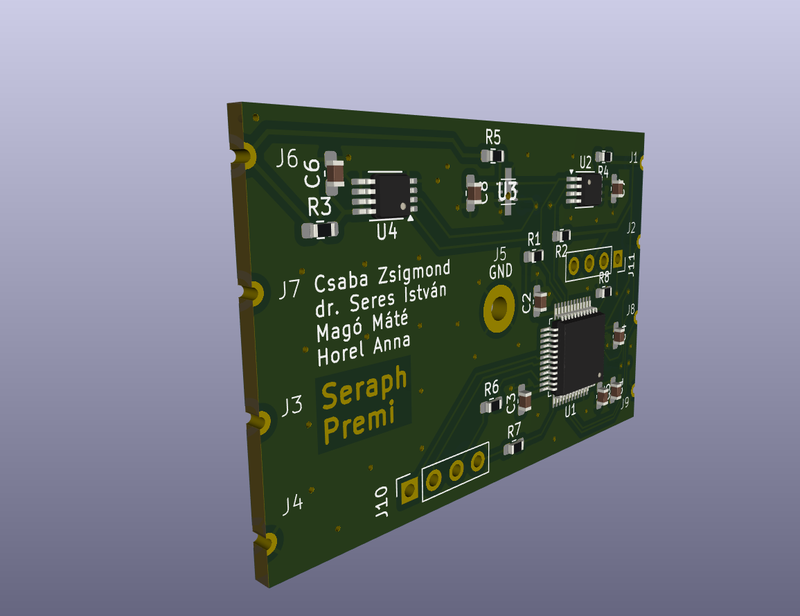
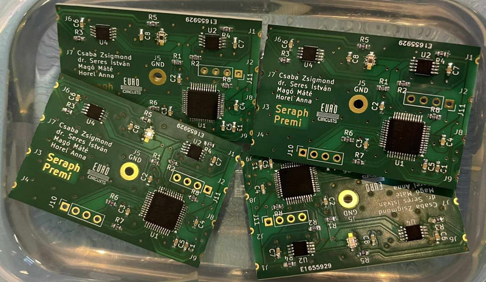
-
2. helyezés a MATE TDK-n
A CanSat-projektből írt TDK-dolgozattal a MATE Intézményi Tudományos Diákköri Konferenciáján, az Anyag-, Ipari technológia és Mechatronika szekcióban 2. helyezést értünk el, így továbbjutottunk az OTDK-ra. A MATE híre
-
Diákönkormányzati nap
Az iskolánk diákönkormányzati napján előadást tartottunk a projektjeinkről.
-
ESERO Hungary megnyitó
Májusban bemutathattuk a CanSat-projektünket az ESERO Hungary megnyitóján, az iskola előző évi CanSat-csapatával, a PreSattal együtt. Köszönjük a meghívást!
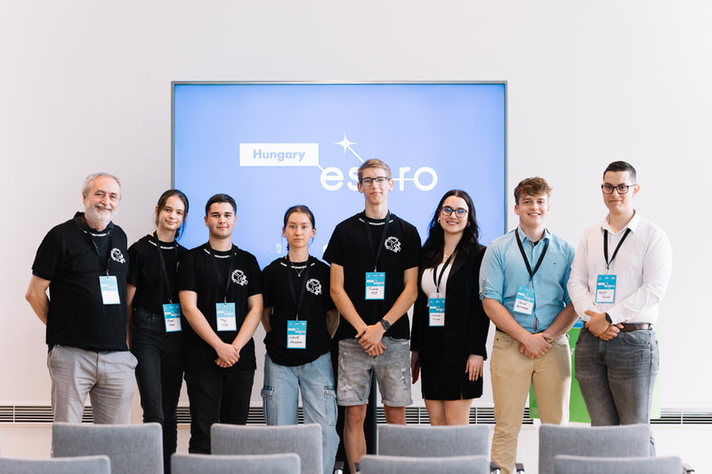

Fotó: Design Terminal
-
Tudományos különdíj a döntőn
A CanSat Hungary döntőjén tudományos különdíjat kaptunk (Scientific Award). Az Űrvilág beszámolója a döntőről
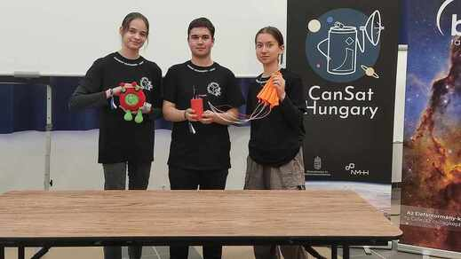
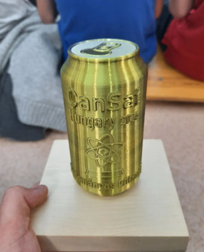
-
Készülünk a döntőre, és kész a képelemző MI
Összeraktuk az alaplapot, kipróbáltuk a kamerarendszert, és a Palotakertben dobópróbákkal ellenőriztük a szerkezetet. Ugyanekkor írtunk arról is, hogy elkészült a mesterséges intelligencia, amely megbecsüli, mekkora részét fedi egy képnek természetes zöld.

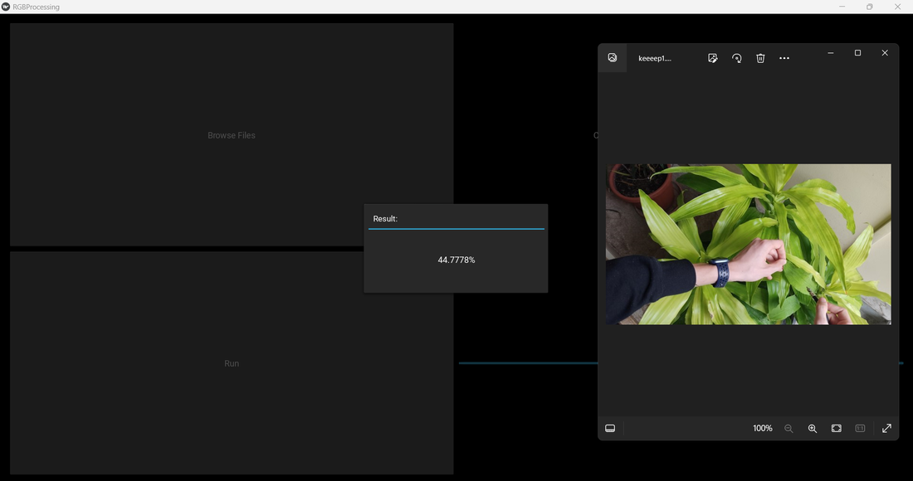
-
Leadtuk a PLR-t, és lett csapatpólónk
Időben leadtuk az indítás előtti jelentést. Az utolsó nap nagy hajrá volt, de még jutott idő a szenzorok végső tesztjére és egy ejtési próbára az ejtőernyővel. Az alaplapot ezen a héten forrasztottuk össze, így az ejtés közben már mérni is tudtunk. A döntőre csapatpóló is készült.
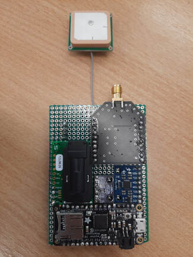
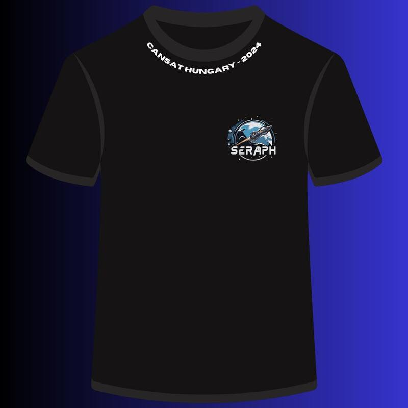
-
Döntősök lettünk
Az MWAIN („Meeting without an interesting name”) fedőnevű találkozón megkaptuk a döntős érmet, vagyis bejutottunk a CanSat Hungary döntőjébe.
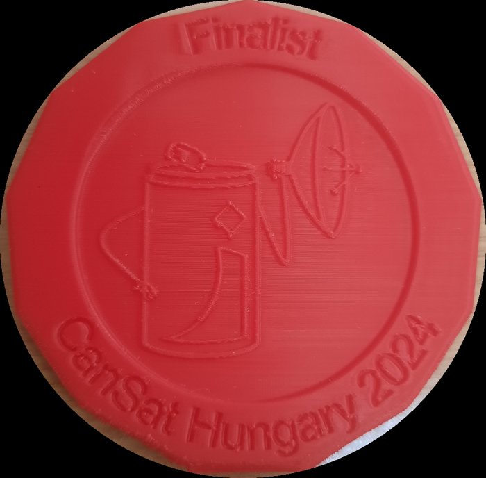